|
Physics Laboratory |

|
Excel Tutorial #3 |
|
2. Arithmetic E |
Basic Actions |
4. Algebra F |
There are a few things you can do to your worksheet that makes it more readable. This will greatly help your TA better grade your lab report and ascertain where you are making your mistakes. Here we discuss a few of the things you can do to improve the look of your worksheet.
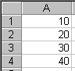
In this tutorial we will take you through a mock experiment where we measure the radii of several spheres and use Excel to determine their volumes. (If only the actual physics labs were so easy!) The recorded radius data is shown at the right. As you can see, the data is there but much work is required to get worksheet into an acceptable form. You should follow the steps with your own copy of Excel. First enter the data as shown at the right. Create Titles and Column Headings
Create Titles and Column HeadingsThe data shown above has no heading. Your TA can't possible know what the data represents. You first need to add column headings above the data telling the world what the numbers represent. Obviously there is no room for a heading so you must move the data to another location further down on the worksheet. You could retype the data, but why do that when you can move it?
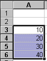
 You can move cell contents by highlighting (selecting) the
desired cells. Then with a mouse, click on the border or edge of the
highlighted cells and use the mouse to move them to an unoccupied area.
For instance we move the radii data from cells A1:A4 to A3:A6 as shown
at the right.
You can move cell contents by highlighting (selecting) the
desired cells. Then with a mouse, click on the border or edge of the
highlighted cells and use the mouse to move them to an unoccupied area.
For instance we move the radii data from cells A1:A4 to A3:A6 as shown
at the right.
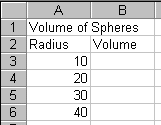
Now we have space to add a title to our data table. Since we are determining the volume of several spheres, let's entitle the data table "Volume of Spheres". Put this title in cell A1. We also need column headings. In cell A2 type "Radius" because the data below the heading are the measurements of the radius. Let's also place a heading for the resulting volume calculations. In cell B2, type "Volume". You are now ready to enter the formula that you will use to calculate the volume of the spheres. Add Units to the Headings
Add Units to the Headings
 The radius and volume headings are missing the units of the data the
columns contain. Is the radius 10 cm, 10 m, 10 in? Of course, units
are need. The best way to do this is place the units in parentheses
below the heading. To keep the heading and the unit in the
same cell, first type the heading and then simultaneously press the
<ALT>+<ENTER> keys. This will add a carriage return
within the cell, thus allowing you to type the unit below the heading.
The radius and volume headings are missing the units of the data the
columns contain. Is the radius 10 cm, 10 m, 10 in? Of course, units
are need. The best way to do this is place the units in parentheses
below the heading. To keep the heading and the unit in the
same cell, first type the heading and then simultaneously press the
<ALT>+<ENTER> keys. This will add a carriage return
within the cell, thus allowing you to type the unit below the heading.
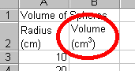
Notice the units of volume is cm3 but is written
as cm^3 in cell B2. This is a common method that students use to
write subscripts. But there is a better way.
Instead of typing cm^3,
type cm3, then highlight the 3. When the 3 is highlighted, click on
the Format >> Cells >> Superscript and the 3 become
superscripted as shown to the right.
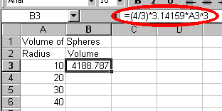
Copy and Paste Your Formula
You should recall that the volume of a sphere is given by the
formula  , where r is
the sphere's radius and p = 3.14159.
Therefore, the formula that you will use to find the volume of the
first sphere is =(4/3)*3.14159*A3^3. Enter this formula in cell B3.
Note that the result (4188.787 cm3) is displayed in the
cell.
, where r is
the sphere's radius and p = 3.14159.
Therefore, the formula that you will use to find the volume of the
first sphere is =(4/3)*3.14159*A3^3. Enter this formula in cell B3.
Note that the result (4188.787 cm3) is displayed in the
cell.
We could repeat this process for each radius in the table and type new formulas for each. However the best (and fastest) way to determine the volume of the remaining spheres is to use the copy and paste functions. It would be useful to copy the formula in cell B3 and paste it to cell B4 through B6.
|
To copy the contents of a cell, highlight the cell by
clicking on the cell. In our example, click on cell B3. Then click
on the Copy Button, , on the tool
bar. The cell will be marked with
a marquee border as shown below.
Double-check your formula to ensure it is correct before copying it! |
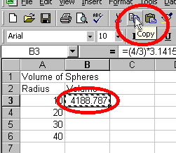 |
|
To paste the copied cells to another location, highlight the
destination cells with your mouse. In our example, we highlighted
cells B4, B5 and B6. Then click on the Paste Button,
on the tool bar.
The formula is then moved to the destination cells as
shown below. Note that
the pasted formula automatically changed the cell reference to the
appropriate radius.
It is always a good idea to double-check the first and last cells with a calculator after a paste just to make sure the formulas were correct. |
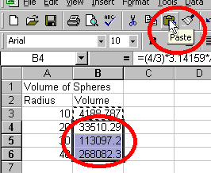 |
Use Correct Significant Figures
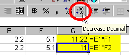
Any good physics laboratory student knows that 2.2 times 5.1 is 11, not 11.22 like your calculator says. This is, of course, due to the number of significant figures used. The numbers 2.2 and 5.1 both have two significant figures, therefore, the answer must also have two significant figures. By default Excel displays the maximum number of decimal places. However, the number of decimals displayed can be manually forced by using the Increase Decimal Button,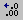
and Decrease Decimal Button,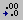
, depending on the given situation. For example, the image at the right shows the how to use the Decrease Decimal Button to reduce the number of decimals in the answer.
Throughout these tutorials, we will not be
concerned with significant figures. I just wanted you to know how
to adjust the number of decimals so your lab write-ups will be
done correctly.
Emphasize Important Text
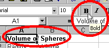
It is helpful to emphasize text like titles, column headings, and final results. One way to make text stand out is to make it bold. To make the entire contents of a cell bold, for instance the title found in cell A1, simply highlight (select) the cell (or cells) and click the Bold Button, , on the toolbar.
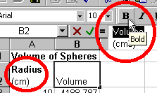
You need not make the entire cell contents bold
as shown above. For instance, you can make the heading bold while
the units are displayed as normal text. To do this,
from the formula bar, highlight the text you wish to make bold
and then click the Bold Button, , on the toolbar.
Shade Important Cells
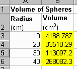
To really draw attention to the most important results of the experiment, you should shade or color-in the cells containing formulas and final results. To do so highlight (select) the cell or cells you want shaded, click on the black down-arrow of the Fill Color Button, , and select the desired color.
Note that coloring a cell a dark color will
hide the text, so choose a light shade.
 More Cell Manipulations
More Cell Manipulations
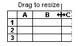
We are almost done making your worksheet presentable. Currently the worksheet looks a little cramped. Let's resize the columns so the data and results are a little more readable. To do that, drag the boundary on the right side of the Column A heading until the column is the width you want. Do the same for column B. The same technique can also be used on worksheet rows.
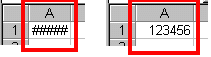
Note that if the width of a cell is too small, the
cell contents will not be able to be displayed and the ###### error
will appear in the cell. To fix the problem, simply increase the
width of the cell.
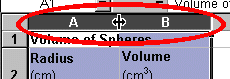
You can resize a number of columns at once
by selecting the columns you want to change, and then drag a boundary to
the right of a selected column heading. Each highlighted cell
will automatically become resized. The image to the right shows
the Volume Experiment columns resized to a more readable width:
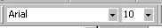
You can also change the font style and
font size to make certain text, like titles and headings, more
noticeable.
By default, all text is left-aligned in a cell. To change the alignment, select the desired cell (or cells) and then click on one of the alignment buttons, : Align Left, Center or Align Right.
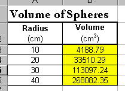
You can also add borders to the cells to make them stand out even more. The easiest (but not the most comprehensive) way to add borders to a cell or cells, is to highlight the desired cells, click on the Borders Dropdown Button, , and then select the appropriate border. For more flexibility, you can create custom borders by clicking on Format >> Cells >> Border from the Menu Bar.The image at the right shows the Volume Experiment data with centered headings and data. Also notice the title is resized with a different font style, and borders have been added.
Display Sample Formulas
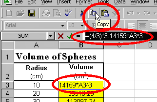
The worksheet is now in a form that is easy to read, but we can still make it easier for your TA to grade. For example, we can display a sample equation from each type of formula used in the worksheet. To do this, from the formula bar highlight the equation you wish to display as text, as shown at the right. With the formula highlighted, click the Copy Button, , and then press the <ENTER> key. Don't overlook the last step, you must hit the <ENTER> key.When the formula is copied, click in an empty cell where you want the displayed equation to appear. In that cell, type an apostrophe ( ' ) which will force the contents of the cell to appear as text. Then paste the formula by clicking the Paste Button, .
To make the displayed formula even more noticeable, shade the cell with a noticeable color as shown in the image below.
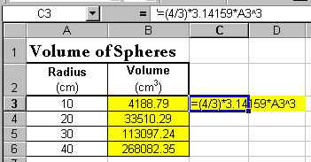
Consult the Page Setup
You will often be required to print your worksheet. It is important to print gridlines and row and column headings so your TA will have a
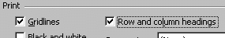
reference when checking your formulas. To do this, click on File >> Page Setup from the Menu Bar. Then click on the Sheet tab. Make sure to select Gridlines and Row and column headings from within the Print section.Use the Print Preview Button, , to view your worksheet before you print it. Take a few minutes to review your work and make sure that you used units, correct significant figures, borders, shading, etc. Also make sure that you displayed your sample formulas. When you are satisfied that it is ready to be handed in, then print it. As an example, this is what our TA would see if he or she were viewing our printed Volume Experiment worksheet (note we did not use a color printer so the shading was converted to gray-scale):
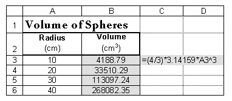
If you have a question or comment, send an e-mail to
.
|
2. Arithmetic E |

|
4. Algebra F |
Copyright © 2000, Clemson University. All Rights Reserved.
This page was created by
.